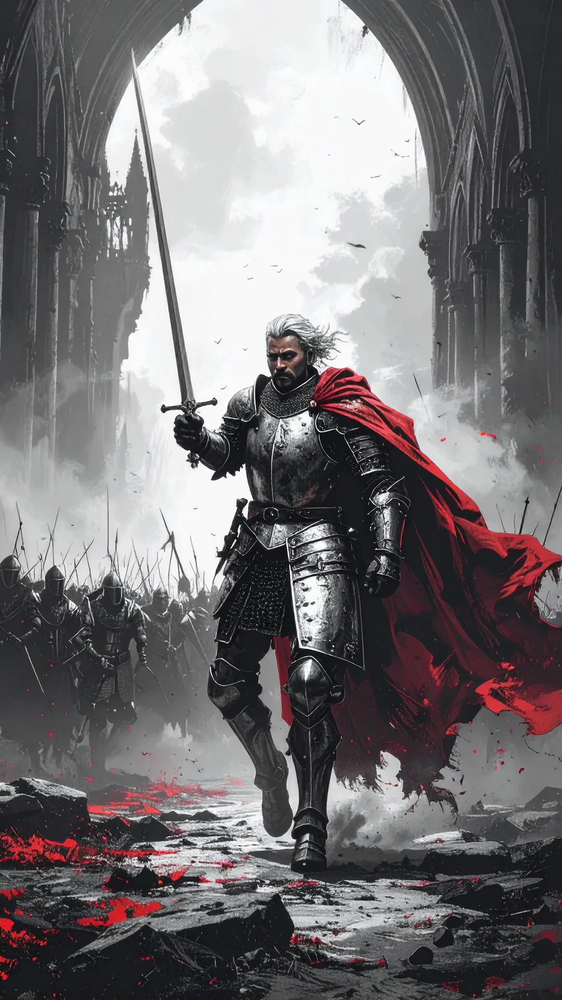

General Behelit
General Behelit er lederen af Den Hvide Høgs Hær, en skikkelse indhyllet i både ære og frygt. Hverken mand eller kvinde, men noget midt imellem, står Behelit som billedet på disciplin og styrke. På slagmarken rider generalen forrest med sværdet hævet, mens de hvide faner bæres af hæren bagved – høgens tegn, et symbol på skarphed, frihed og ubarmhjertig jagt.
Mange frygter navnet, andre hvisker det som et løfte. For hæren er Behelit en uomgængelig sandhed: Den Hvide Høg svæver højt, og så længe generalen rider, findes der endnu håb om sejr.
Behelit er mere end blot en militær leder. Rygter vil vide, at generalens vilje er bundet til en højere skæbne, og at øjnene altid hviler på himlen, som om svaret på deres kald findes blandt stjernerne. Alligevel er Behelit jordnær: hård mod fjenderne, men beskyttende over for sine soldater.